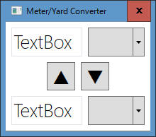
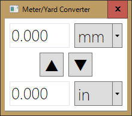

メートル法 と ヤード・ポンド法 の値変換プログラムを、WPF の データバインディングを使って作成します。
ここに記載のプログラムは、全て「日経ソフトウェア 2015年9月号」中の「基礎からわかる C# デスクトップアプリ開発 第3回」からの引用です。
最初にアプリ画面を作成します。
こんな感じです。画面要素だけで動作にかかわる実装は一切ありません。

[プログラムソース "MainWindow.xaml"]
<Window x:Class="MeterYardConverter.MainWindow"
xmlns="http://schemas.microsoft.com/winfx/2006/xaml/presentation"
xmlns:x="http://schemas.microsoft.com/winfx/2006/xaml"
xmlns:d="http://schemas.microsoft.com/expression/blend/2008"
xmlns:mc="http://schemas.openxmlformats.org/markup-compatibility/2006"
xmlns:local="clr-namespace:MeterYardConverter"
mc:Ignorable="d"
Title="Meter/Yard Converter" FontSize="26.667" FontFamily="Segoe UI Light"
SizeToContent="WidthAndHeight" ResizeMode="NoResize">
<StackPanel Margin="4">
<StackPanel Orientation="Horizontal">
<TextBox TextWrapping="Wrap" Text="TextBox" Width="100" Margin="4"/>
<ComboBox Width="80" Margin="4"/>
</StackPanel>
<StackPanel Orientation="Horizontal" HorizontalAlignment="Center">
<Button Content="▲" Width="40" Margin="4"/>
<Button Content="▼" Width="40" Margin="4"/>
</StackPanel>
<StackPanel Orientation="Horizontal">
<TextBox TextWrapping="Wrap" Text="TextBox" Width="100" Margin="4"/>
<ComboBox Width="80" Margin="4"/>
</StackPanel>
</StackPanel>
</Window>
データバインディングを実装するために、 INotifyPropertyChanged を継承した ViewModel を作成します。
注意：
・[CallerMemberName] は .NET4.5 以降で使用できます。
using System.ComponentModel; // INotifyPropertyChanged
using System.Runtime.CompilerServices; // CallerMemberName
namespace MeterYardConverter
{
public class ViewModel : INotifyPropertyChanged
{
public event PropertyChangedEventHandler PropertyChanged;
protected virtual void OnPropertyChanged([CallerMemberName] string propertyName = null)
{
if (this.PropertyChanged != null)
{
this.PropertyChanged(this, new PropertyChangedEventArgs(propertyName));
}
}
}
}
データバインディングを実装するために、 ICommand を継承した DelegateCommand を作成します。
[プログラムソース "DelegateCommand.cs"]
using System;
using System.Windows.Input; // ICommand
namespace MeterYardConverter
{
public class DelegateCommand : ICommand
{
private readonly Action execute;
private readonly Func<bool> canExecute;
public DelegateCommand(Action execute)
: this(execute, () => true)
{ }
public DelegateCommand(Action execute, Func<bool> canExecute)
{
this.execute = execute;
this.canExecute = canExecute;
}
public void Execute(object parameter)
{
this.execute();
}
public bool CanExecute(object parameter)
{
return this.canExecute();
}
// 以下は今回のプログラムでは使用しませんが、参考記載。
public event EventHandler CanExecuteChanged;
public void NotifyCanExcuteChanged()
{
if ( CanExecuteChanged != null )
{
CanExecuteChanged( this, EventArgs.Empty);
}
}
}
}
モデルの実装を行います。
各単位の宣言と、単位間の変換を行うめっそっどの実装を行います。
using System.Collections.Generic;
namespace MeterYardConverter
{
public class DistanceUnit
{
public string Name { get; set; }
public double Coefficient { get; set; }
public override string ToString()
{
return this.Name;
}
}
/// <summary>
/// メートル単位を表すクラス
/// </summary>
public class MetricUnit : DistanceUnit
{
private static List<MetricUnit> _units = new List<MetricUnit>
{
new MetricUnit {Name="mm", Coefficient=1, },
new MetricUnit {Name="cm", Coefficient=10, },
new MetricUnit {Name="m", Coefficient=10*100, },
new MetricUnit {Name="km", Coefficient=10*100*1000, },
};
public static ICollection<MetricUnit> Units { get { return _units; } }
public double FromImperialUnit(ImperialUnit unit, double value)
{
return (value * unit.Coefficient) * 25.4 / this.Coefficient;
}
}
/// <summary>
/// ヤード単位を表すクラス
/// </summary>
public class ImperialUnit : DistanceUnit
{
private static List<ImperialUnit> _units = new List<ImperialUnit>
{
new ImperialUnit {Name="in", Coefficient=1, }, // インチ
new ImperialUnit {Name="ft", Coefficient=12, }, // フィート
new ImperialUnit {Name="yd", Coefficient=12*3, }, // ヤード
new ImperialUnit {Name="ml", Coefficient=12*3*1760, }, // マイル
};
public static ICollection<ImperialUnit> Units { get { return _units; } }
public double FromMetricUnit(MetricUnit unit, double value)
{
return (value * unit.Coefficient) / 25.4 / this.Coefficient;
}
}
}
ビューモデルを実装します。
[プログラムソース "MainWindowViewModel.cs"]
using System;
using System.Collections.Generic;
using System.Linq;
using System.Text;
using System.Threading.Tasks;
using System.Windows.Input; // ICommand
namespace MeterYardConverter
{
class MainWindowVIewModel : ViewModel
{
// 上のTextBoxで入力されている値
private double _metricValue;
// 下のTextBoxで入力されている値
private double _imperialValue;
// ▲ボタンで呼ばれるコマンド
public ICommand ImperialUnitToMetricUnit { get; private set; }
// ▼ボタンで呼ばれるコマンド
public ICommand MetricUnitToImperialUnit { get; private set; }
// 上のComboBoxで選択されている単位
public MetricUnit CurrentMetricUnit { get; private set; }
// 下のComboBoxで選択されている単位
public ImperialUnit CurrentImperialUnit { get; private set; }
public double MetricValue
{
get { return this._metricValue; }
set
{
this._metricValue = value;
this.OnPropertyChanged();
}
}
public double ImperialValue
{
get { return this._imperialValue; }
set
{
this._imperialValue = value;
this.OnPropertyChanged();
}
}
public MainWindowVIewModel()
{
// CurrnetMetricUnit の初期化
this.CurrentMetricUnit = MetricUnit.Units.First();
// CurrentImperialUnit の初期化
this.CurrentImperialUnit = ImperialUnit.Units.First();
// ICommand MetricUnitToImperialUnit の初期化
this.MetricUnitToImperialUnit = new DelegateCommand(() =>
{
this.ImperialValue = this.CurrentImperialUnit.FromMetricUnit(this.CurrentMetricUnit, this.MetricValue);
});
// ICommand ImperialUnitToMetricUnit の初期化
this.ImperialUnitToMetricUnit = new DelegateCommand(()=> {
this.MetricValue = this.CurrentMetricUnit.FromImperialUnit(this.CurrentImperialUnit, this.ImperialValue);
});
}
}
}
ここまでに作成してきたモデルをビューに対してバインディングします。
下のソースを見てもらうとわかる通り、簡単ですね。
<Window x:Class="MeterYardConverter.MainWindow"
xmlns="http://schemas.microsoft.com/winfx/2006/xaml/presentation"
xmlns:x="http://schemas.microsoft.com/winfx/2006/xaml"
xmlns:d="http://schemas.microsoft.com/expression/blend/2008"
xmlns:mc="http://schemas.openxmlformats.org/markup-compatibility/2006"
xmlns:local="clr-namespace:MeterYardConverter"
mc:Ignorable="d"
Title="Meter/Yard Converter" FontSize="26.667" FontFamily="Segoe UI Light" SizeToContent="WidthAndHeight" ResizeMode="NoResize">
<Window.DataContext>
<local:MainWindowVIewModel/>
</Window.DataContext>
<StackPanel Margin="4">
<StackPanel Orientation="Horizontal">
<TextBox TextWrapping="Wrap" Text="{Binding MetricValue, StringFormat=\{0:N3\}}" Width="100" Margin="4"/>
<ComboBox Width="80" Margin="4" ItemsSource="{Binding Source={x:Static local:MetricUnit.Units}}" SelectedItem="{Binding CurrentMetricUnit}"/>
</StackPanel>
<StackPanel Orientation="Horizontal" HorizontalAlignment="Center">
<Button Content="▲" Width="40" Margin="4" Command="{Binding ImperialUnitToMetricUnit, Mode=OneWay}"/>
<Button Content="▼" Width="40" Margin="4" Command="{Binding MetricUnitToImperialUnit, Mode=OneWay}"/>
</StackPanel>
<StackPanel Orientation="Horizontal">
<TextBox TextWrapping="Wrap" Text="{Binding ImperialValue, StringFormat=\{0:N3\}}" Width="100" Margin="4"/>
<ComboBox Width="80" Margin="4" ItemsSource="{Binding Source={x:Static local:ImperialUnit.Units}}" SelectedItem="{Binding CurrentImperialUnit}"/>
</StackPanel>
</StackPanel>
</Window>
最終的に完成したアプリケーションは以下の通りです。

サンプルプログラム ダウンロード
本ページの情報は、特記無い限り下記 MIT ライセンスで提供されます。
| 2023-04-14 | - | ページデザイン更新 |
| 2015-08-25 | - | 新規作成 |